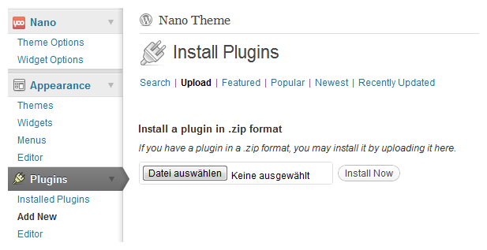

Download the latest Widgetkit version and unpack files and folders in the archive in a temporary directory on your local hard drive.
Using FTP, upload the contents of this directory (including files and subdirectories) to a directory on your server ususally the /tmp directory.
Go to the extensions installer in the Joomla! administration, in the Install Directory field specify the directory where you have uploaded the files and subdirectories of the package.
Click on the Install button and Joomla! will install the contents of the given directory.
To install Widgetkit use the template installer in the Wordpress administration. Go to Appearance » Plugins and click on the tab Upload.
Click on Browse..., select the downloaded Widgetkit zip archive and click Install Now

After the activation in the plugin manager you will see a new item with a small Widgetkit icon in the administration menu on the left.